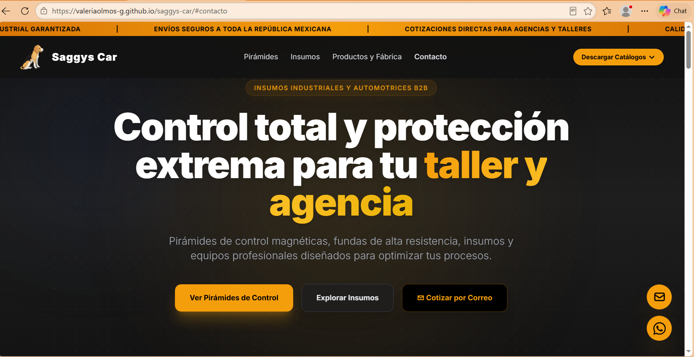
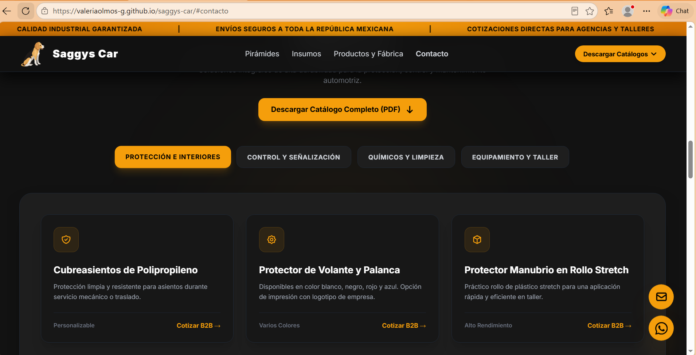
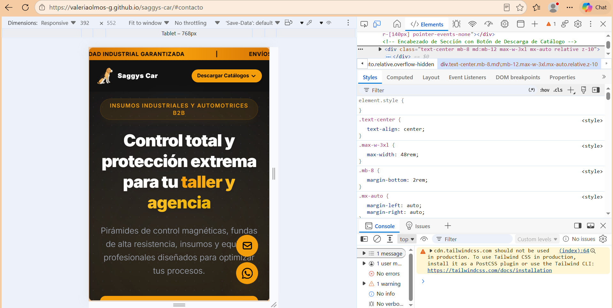

Desarrollo del sitio web industrial B2B y catálogo digital responsivo para una empresa especializada en insumos automotrices, torres de control y pirámides magnéticas para agencias y talleres en México.

Saggys Car es un negocio con trayectoria en la fabricación y distribución de insumos industriales y automotrices de alta resistencia, destacando por sus pirámides de control magnéticas y accesorios especializados para el sector automotriz.
La empresa requería digitalizar su oferta comercial con una plataforma web formal orientada a B2B (Business to Business) que proyectara seriedad industrial, especificara claramente su catálogo técnico y facilitara el contacto comercial directo.
Diseñar y desarrollar un sitio web B2B de alto rendimiento, con una interfaz de estética industrial, capaz de exhibir el catálogo especializado de productos y habilitar canales de contacto directo (múltiples correos, teléfonos fijos y WhatsApp) de forma fluida.
Se estructuró una interfaz moderna con una paleta de colores de alto contraste (negro y amarillo industrial), optimizando la legibilidad técnica y la jerarquía visual de las secciones clave como torres de control, insumos y demostraciones de fábrica.
Se implementaron componentes interactivos mediante Tailwind CSS y Alpine.js para garantizar una navegación dinámica y limpia en cualquier dispositivo.

Para agilizar el cierre de acuerdos comerciales con talleres y agencias, se integró un módulo de contacto robusto en el pie de página y secciones clave, soportando múltiples cuentas de correo electrónico corporativo y líneas telefónicas directas.
El sitio fue optimizado bajo un enfoque completamente adaptable, asegurando que los gerentes de compras y talleres mecánicos puedan consultar catálogos y realizar llamadas a la acción directamente desde teléfonos móviles o computadoras de escritorio.

Saggys Car cuenta ahora con una presencia digital profesional y robusta que fortalece su imagen corporativa en el sector automotriz mexicano. La plataforma optimiza la interacción con clientes industriales y agiliza las cotizaciones comerciales.